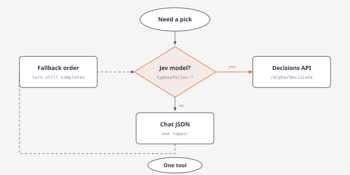

Argos Adaptive Decision Roles and Strict Output Contracts
Overview
Argos supports capability-adaptive decision role integration, enabling finite classification, discrete tool selection, and semantic validation gates across Recon chat and Intel brief analysis.
A single canonical DecisionContract is compiled into either:
- Jev-native questions (
typesafe/jev-1.13via OpenRouterPOST /alpha/decisions), or - Compact schema-constrained prompts for general models (
StrictJsonSchema,JsonMode, orValidatedText).

Application code enforces deterministic surface restrictions, budget caps, credentials, and recovery policies. Generative models continue planning, query decomposition, and narrative synthesis.
Authoritative 12-Template Registry
All 12 decision points share the canonical contract compiler:
| Template | Role | Instruction Focus | Allowed Outcomes |
|---|---|---|---|
mode | classifier | Which deliverable does the request require? | verify, explain, assess_outlook, full_assessment, ambiguous |
directive_alignment | investigation_controller | Does candidate.objective advance task.objective for this subject? | aligned, unrelated, insufficient |
tool_selection | tool_picker | Which eligible candidate best supplies task.required_evidence? | Candidate Tool IDs, no_match, insufficient |
scarce_provider_need | investigation_controller | Is distinctive provider evidence needed beyond retained evidence? | necessary, unnecessary, insufficient |
evidence_relevance | evidence_curator | Does this passage address the intended subject and directive? | relevant, wrong_subject, unrelated, insufficient |
extraction_fidelity | evidence_curator | Is the proposed observation faithful to the cited passage? | faithful, unsupported_addition, material_omission, insufficient |
entity_binding | entity_resolver | Does supplied evidence establish the intended identity? | same_entity, different_entity, ambiguous |
claim_relation | claim_assessor | How does the exact passage bear on the claim qualifiers and time scope? | supports, contradicts, mentions_only, irrelevant, insufficient |
handoff_adequacy | investigation_controller | Are material findings, uncertainty, and unfinished work preserved? | adequate, omission, unsupported_addition, insufficient |
next_action | investigation_controller | Which offered task best closes the remaining gap? | Task IDs, request_replan, defer, insufficient |
resolution | investigation_controller | Is the required answer established, disputed, incomplete, or blocked? | resolved_supported, resolved_disputed, needs_evidence, blocked, insufficient |
publication | claim_assessor | Is the conclusion faithful to assessed evidence and uncertainty? | faithful, overstated, contradictory, insufficient |
State Isolation & Prompt Hardening
The state builder (DecisionState) isolates untrusted evidence passages as passive data rather than instructions:
task: Identifier, revision, objective, required evidence, completion criteria.subject: Confirmed bindings and known ambiguity sets.candidate: Action, observation, binding, handoff, or conclusion under evaluation.evidence: Source IDs and verbatim passages with qualifications.computed_checks: Authoritative freshness, schema validations, eligibility, and budget facts.missing_context: Explicit known omissions.
Source content is strictly quoted inside the state payload. Prompt injection payloads embedded in retrieved evidence cannot modify criteria or approved labels.
Execution Adapters
The adapter resolver inspects the configured provider and model to select the appropriate compiler:
NativeDecisions: Dispatches directly to OpenRouterPOST /alpha/decisionswith typedchoice,noul, orscorequestions. Never sent through/chat/completions.StrictJsonSchema: Configures OpenAI-compatible structured outputs ensuring exact required properties with no extra keys.JsonMode: Enforcesresponse_format: {"type": "json_object"}and validates response locally against the schema.ValidatedText: Formats a minimal JSON-only instruction and applies strict local AST parsing.
Threshold Policy & Uncertainty
Each decision evaluates against a ThresholdProfile:
- Winning Probability: Minimum probability (default 0.50) required for affirmative approval.
- Distribution Margin: Minimum margin (default 0.10) between top-1 and top-2 candidate probabilities.
- Abstention Handling: Selection of
insufficient,ambiguous, orno_matchyieldsEnforcementOutcome::Uncertain. - Approval Rule: Only
EnforcementOutcome::Passconstitutes approval.UncertainandUnavailablenever grant automatic progression.
TUI Display & Trace
- Providers → Defaults: The "Decision & Analytical Roles" pane displays the active model, inheritance chain, and resolved adapter (
native_decisions,strict_json_schema, etc.). - Live Trace: Renders
"Deciding… · <model> · <gate>"during execution, followed by"Decision · <summary> [<outcome>] · <model>". - Thinking UI: Jev has no generated thinking tokens; no synthetic thinking blocks are created. General model reasoning remains in collapsed thinking sections without contaminating decision JSON.